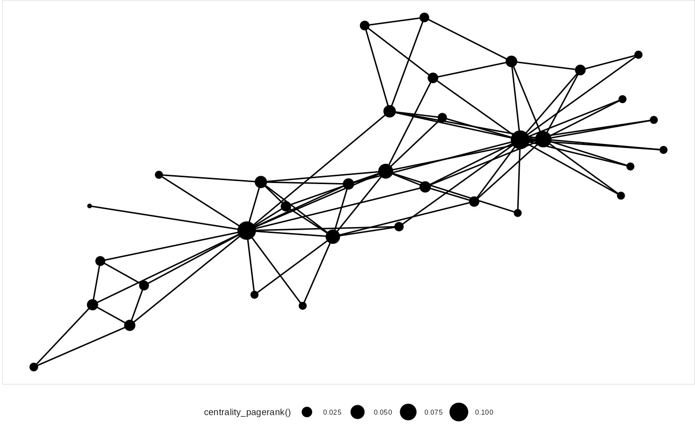
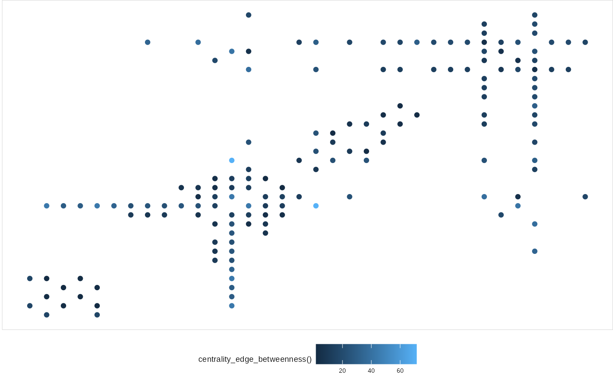

Following ggraph v2.0 the tidygraph package has been used as the central data structure. The integration goes beyond using it as a simple background engine and has deep implications for what you can do and how you can do it when plotting with ggraph. This vignette will go into the details of the ggraph/tidygraph relationship — buckle up…
Supported data structures
Prior to v2 ggraph had two main supported data structures, namely dendrogram and igraph. In addition hclust and network were supported by automatic conversion to dendrogram and igraph respectively. Each of the two data structures had their own layouts and under the hood two different set of functionality had to be maintained to extract nodes and edges etc. In v2 and going forward this has been simplified and ggraph now uses only tbl_graph as a graph representation. This does not mean that you’re out of luck if you’re not buying into the whole tidygraph idea. Every object supported by tidygraph is supported directly in ggraph by automatic conversion to tbl_graph. This means that igraph, dendrogram, hclust, and network is still supported in addition to data.tree, phylo, and graph as well as a number of data.frame, matrix, and list representations.
The change has reduced internal code complexity quite a bit which will make it easier to provide new features in future. From a user point of view it has the benefit of simplifying the API in that ggraph doesn’t really care what type of network object you pass in - every layout and geom just works with every data structure. Further, it simplifies how to add ggraph support to additional data structures: just write an as_tbl_graph() method for the class!. Due to the large support of classes and data structures in tidygraph this should relatively straightforward. If you’re developer of a package that defines a custom network class simply export an as_tbl_graph() method for the class to gain native ggraph (and tidygraph) support, or add it directly to tidygraph through a PR.
This simplification for both me and the users have really been the motivation for the integration of tidygraph but as it were it has also allowed or instigated a number of cool new features that will be explored below.
NSE in layout specifications
In ggraph the initiation will need to specify a layout to use for the subsequent node and edge geoms. Many of these layouts use different node and edge variables in their calculations e.g. a node size or an edge weight. Prior to v2 these arguments would simply take a string naming the respective variable to use, but following the v2 update these arguments implement Non-Standard Evaluation (NSE) in a manner known from both dplyr and ggplot2 where it is used inside aes() calls. Depending on whether the argument refers to a node or edge value the provided expression will be evaluated in the context of nodes or edges respectively. The bottomline is that given a network such as this:
library(tidygraph)
graph <- as_tbl_graph(
data.frame(
from = sample(5, 20, TRUE),
to = sample(5, 20, TRUE),
weight = runif(20)
)
)
graph## # A tbl_graph: 5 nodes and 20 edges
## #
## # A directed multigraph with 1 component
## #
## # Node Data: 5 x 1 (active)
## name
## <chr>
## 1 4
## 2 5
## 3 2
## 4 3
## 5 1
## #
## # Edge Data: 20 x 3
## from to weight
## <int> <int> <dbl>
## 1 1 2 0.898
## 2 2 5 0.686
## 3 3 3 0.841
## # … with 17 more rowsThen, instead of writing:
You would simply write:

This change means that it is much easier to experiment with modifications to node and edge parameters affecting layouts as it is not necessary to modify the underlying graph but only the plotting code, e.g.:

Access to tidygraph algorithms in ggraph code
The most important improvement resulting from the integration of tidygraph and ggraph is that tidygraph algorithms are now directly usable within ggraph calls. This means that it is no longer necessary to precompute and store derived node and edge variables on the graph in order to use them in a plot:
graph <- create_notable('zachary')
ggraph(graph, layout = 'fr') +
geom_edge_link() +
geom_node_point(aes(size = centrality_pagerank())) +
theme(legend.position = 'bottom')
here it is not necessary to first compute the pagerank centrality and store it as a node variable in order to plot it, and if you’re interested in looking at one of the myriad of other centrality measures you simply change the plotting code. This feature makes it much easier and painfree to investigate the effect of different graph measures on your plots and is a huge benefit when iterating on your visualisation.
Access to tidygraph is available within ggraph() and aes() calls, and within facet formulas. It is thus possible to use algorithms when specifying layouts, adding aesthetics to geoms and splitting into subplots - all areas were ease of iteration is vital:
ggraph(graph, 'matrix', sort.by = node_rank_leafsort()) +
geom_edge_point(aes(colour = centrality_edge_betweenness()), mirror = TRUE) +
theme(legend.position = 'bottom')